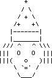

Senior Inclusive Developer
Interests
My main interests are how to use the semantic information within the GUI to provide alternative access for persons with disabilities, and how to improve that information to give them an even better user experience. Here are some of the projects I have worked on, roughly from the present to the past:
- Main developer of the GNOME Shell screen magnifier.
- Member of the W3C working group defining the WAI-ARIA standard, and editor of the Authoring Practices Guide.
- dojo toolkit - adding ARIA, keyboard a11y, and automated UI testing.
- Fluid project - flexible user interface design.
- Technical lead for the Web-4-All project. Developed with Industry Canada, it ensures that seniors, new Canadians, and people with disabilities or literacy challenges have computer access to services and information on the Internet. Web-4-All stores user preferences on a smartcard. The smartcard is used to configure a public access terminal and its adaptive technology.
- Developing a player for the Barrier Free Broadband Learning Environments project. This project focusses on the accessibility of content delivered over broadband; specifically, how such content can be enhanced, on demand, for people with varying types of disability and/or learning styles. The player is written using Java/JFC and QuickTime for Java.
- Project lead for an audio look and feel for Swing.
- Member of the design team for the "accessibility prompt" tool; a tool that prompts authors to make their HTML more accessible. I partially implemented a version of the tool in Java.
- Speech protonode for VRML. This was part of a larger project entitled "Accessibility and VRML".
- Member of the JFC advisory council. I commented (and complained and cajoled) on the accessibility of Swing.
- Long ago, I looked into UIML as a way of defining multiple user interfaces for a single application.
- Co-designed a word prediction engine.
What I am interested in is how to represent the functionality of a given piece of software independent of how users interact with it. The idea is that once that functionality is defined in a way that does not presume any specific user interface, one can then define various kinds of user interface that engage different senses, including the GUI, voice recognition, audio/speech, and haptics.
Musings
From time to time, I write down my thoughts on some topic or other. These documents can be found in the musings section of this site.
Personal
I am married to Judy and we have a son, Alistair, and a cat named Isaac.
Hobbies and other interests include fantasy role playing, jogging, juggling, and piano. I can juggle three.
For a more extensive biography, go to my biography page.

Joseph Scheuhammer, Ph.D.
OCAD University
2nd Floor
205 Richmond St. W.
Toronto, Ontario
Canada
M5V 1V3
TEL: (416) 977-6000 ext 3960
EMAIL: clown dot idi at gmail dot com
Twitter: xlown
Identi.ca: clown